2.9. Density Estimation¶
Density estimation walks the line between unsupervised learning, feature engineering, and data modeling. Some of the most popular and useful density estimation techniques are mixture models such as Gaussian Mixtures (sklearn.mixture.GMM), and neighbor-based approaches such as the kernel density estimate (sklearn.neighbors.KernelDensity). Gaussian Mixtures are discussed more fully in the context of clustering, because the technique is also useful as an unsupervised clustering scheme.
Density estimation is a very simple concept, and most people are already familiar with one common density estimation technique: the histogram.
2.9.1. Density Estimation: Histograms¶
A histogram is a simple visualization of data where bins are defined, and the number of data points within each bin is tallied. An example of a histogram can be seen in the upper-left panel of the following figure:
A major problem with histograms, however, is that the choice of binning can have a disproportionate effect on the resulting visualization. Consider the upper-right panel of the above figure. It shows a histogram over the same data, with the bins shifted right. The results of the two visualizations look entirely different, and might lead to different interpretations of the data.
Intuitively, one can also think of a histogram as a stack of blocks, one block per point. By stacking the blocks in the appropriate grid space, we recover the histogram. But what if, instead of stacking the blocks on a regular grid, we center each block on the point it represents, and sum the total height at each location? This idea leads to the lower-left visualization. It is perhaps not as clean as a histogram, but the fact that the data drive the block locations mean that it is a much better representation of the underlying data.
This visualization is an example of a kernel density estimation, in this case with a top-hat kernel (i.e. a square block at each point). We can recover a smoother distribution by using a smoother kernel. The bottom-right plot shows a Gaussian kernel density estimate, in which each point contributes a Gaussian curve to the total. The result is a smooth density estimate which is derived from the data, and functions as a powerful non-parametric model of the distribution of points.
2.9.2. Kernel Density Estimation¶
Kernel density estimation in scikit-learn is implemented in the sklearn.neighbors.KernelDensity estimator, which uses the Ball Tree or KD Tree for efficient queries (see Nearest Neighbors for a discussion of these). Though the above example uses a 1D data set for simplicity, kernel density estimation can be performed in any number of dimensions, though in practice the curse of dimensionality causes its performance to degrade in high dimensions.
In the following figure, 100 points are drawn from a bimodal distribution, and the kernel density estimates are shown for three choices of kernels:

It’s clear how the kernel shape affects the smoothness of the resulting distribution. The scikit-learn kernel density estimator can be used as follows:
>>> from sklearn.neighbors.kde import KernelDensity
>>> import numpy as np
>>> X = np.array([[-1, -1], [-2, -1], [-3, -2], [1, 1], [2, 1], [3, 2]])
>>> kde = KernelDensity(kernel='gaussian', bandwidth=0.2).fit(X)
>>> kde.score_samples(X)
array([-0.41075698, -0.41075698, -0.41076071, -0.41075698, -0.41075698,
-0.41076071])
Here we have used kernel='gaussian', as seen above.
Mathematically, a kernel is a positive function 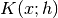
which is controlled by the bandwidth parameter 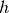.
Given this kernel form, the density estimate at a point  within
a group of points 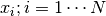 is given by:
within
a group of points 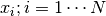 is given by:
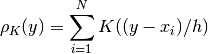
The bandwidth here acts as a smoothing parameter, controlling the tradeoff between bias and variance in the result. A large bandwidth leads to a very smooth (i.e. high-bias) density distribution. A small bandwidth leads to an unsmooth (i.e. high-variance) density distribution.
sklearn.neighbors.KernelDensity implements several common kernel forms, which are shown in the following figure:
The form of these kernels is as follows:
Gaussian kernel (kernel = 'gaussian')
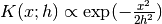
Tophat kernel (kernel = 'tophat')
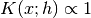 if 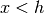
Epanechnikov kernel (kernel = 'epanechnikov')
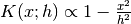
Exponential kernel (kernel = 'exponential')
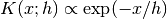
Linear kernel (kernel = 'linear')
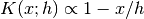 if
Cosine kernel (kernel = 'cosine')
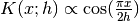 if
The kernel density estimator can be used with any of the valid distance metrics (see sklearn.neighbors.DistanceMetric for a list of available metrics), though the results are properly normalized only for the Euclidean metric. One particularly useful metric is the Haversine distance which measures the angular distance between points on a sphere. Here is an example of using a kernel density estimate for a visualization of geospatial data, in this case the distribution of observations of two different species on the South American continent:
One other useful application of kernel density estimation is to learn a non-parametric generative model of a dataset in order to efficiently draw new samples from this generative model. Here is an example of using this process to create a new set of hand-written digits, using a Gaussian kernel learned on a PCA projection of the data:
The “new” data consists of linear combinations of the input data, with weights probabilistically drawn given the KDE model.
Examples:
- Simple 1D Kernel Density Estimation: computation of simple kernel density estimates in one dimension.
- Kernel Density Estimation: an example of using Kernel Density estimation to learn a generative model of the hand-written digits data, and drawing new samples from this model.
- Kernel Density Estimate of Species Distributions: an example of Kernel Density estimation using the Haversine distance metric to visualize geospatial data